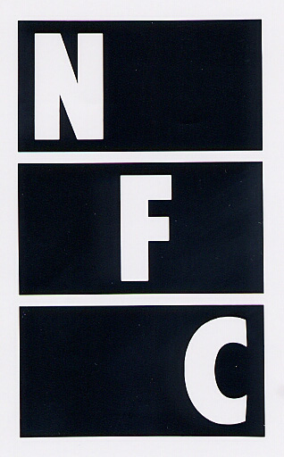

Kanazawa film festival all time best
Kanazawa Film Festival will be 10th anniversary this year. Thanks to everyone who supports Kanazawa Film Festival so far. This time in 10th anniversary, we asked everone to vote for the films and events in past Knazawa Film Festval that "I want to see again", "I want to watch a film that I could not watch at that time". We will revival screening the movies that are higher in the voting results.
Crispin Glover's Big slideshow

Big slide show of that Kanazawa Film Festival 2008 has come back to Kanazawa!!
Continuous Image so far never seen anyone, Do not miss this opportunity!
9/24 (Sat) 21:30
Big Slide Show (60min)
"It Is Fine! Everything Is Fine." Screening
Q&A
Book autograph session
9/25 (Sun) 18:30
Big Slide Show (60min)
"What is it?" Screening
Q&A
Book autograph session
クリスピン・グローヴァー
1964年ニューヨーク生まれ。芸能一家で、幼いころからTV、映画などに出演。『13日の金曜日 完結編』『バック･トゥ･ザ･フューチャー』『ギルバート･グレイプ』『デッドマン』『チャーリーズ･エンジェル』『ベオウルフ』『アリス・イン・ワンダーランド』など多くのハリウッド作品に出演のほか、作家、ミュージシャン、そして映画監督として、特異な個性を発揮。
It is Fine! EVERYTHING IS FINE.

2007 / USA / 74min
Director: Crispin Glover, David Brothers
Starring: Stephen · C · Stewart, Margit-Karusutensen
"The second film of ""IT"" trilogy. What is the crime that person with disabilities who feel a fetish desires to the woman of long hair commit? Depict the spirit and body of the handicap in the film noir of the illusion. A semi-autobiographical film of Stephen · C · Stewart who starring. M · Karusutensen who appeared in a number of Fassbinder films is co-starring. And also Glover's parents are co-starring.
What is it?
2005 / USA / 72min
Director, Screenplay, Cast: Crispin Glover
Starring: Michael Buribisu, Ricky Whitman
Crispin Glover's "IT" trilogy first film. He stare the world from the point of view that is not the mainstream of the general public. People with down syndrome and snail of the dark fantasy adventure. Glover also plays "God" who manipulate the world behind the scenes. Excessive director debut film that springing full of delusion of Glover which is said to be "the most eccentric actor of Hollywood".
Talk show of Motomiya movie theater's master Shuji Tamura and "Pink movie good scene collection"
©都築響一
9/19(Sun) 12:05
Screening the collection of the pink movie nice scene about 50 years ago that master Tamura collected and edited.
Screening (40 minutes) and talk show(40 minutes).
"Sensuality Japanese sexual prodigy night story" that a rare pink movie unearthed in Motomiya movie theater will be screened.
The collection of the pink movie nice scene 2016
2016/Japan/40min
This collection is about was made by 50-year-old independent film production, that nice pink movie scenes is connected like kiss scenes of "Nuovo Cinema Paradiso" Nice scene collection from the rare film such as that movie of Koji Seki's legengary works.
Sensuality Japanese sexual prodigy night story
1971 / Japan / 80min
Director: Iwao Zushi
Screenplay: Masaji Hoshi, Sakyo Kirishima
Animation Director: Norihiko Shima
Starring: MIki Hayashi, Mari Iwai, Kenichiro Sugiyama, Yuko Sugi
This rare movie which is said to "the most mysterious film in the animation movie history". It was discovered from Motomiya movie theater of the warehouse. Because the state was also good, it will be screened in this the first time in 45 years. The copy at the time, "Technique of the hug is discribed in color! You are stronger than horse! Peerless sex is bestowed by the hidden treasure! Lustful definitive edition! Epoch-making gorgeous epic film by brilliant colors!", these brave characters dance.
LIP'S Presents "Rocky Horror Picture Show" performance screening
9/23(Fri) 21:00
Early three years from the recorded previous screening that Kanazawa Film Festival largest ever mobilization.
... It is time when Miyako hall dyed rosy again!
Also this time Rocky Horror Picture Show fan club "LIP'S" will aggressive and gently lead you who the first time experience!
access to LIP'S of FB page If you need to know more.www.facebook.com/rhps.lips
THE ROCKY HORROR PICTURE SHOW
©HOLLYWOOD CLASSICS, ©20TH CENTURY FOX
1975 / United Kingdom / 100min
Director, Screenplay: Jim Sherman
Starring: Tim Curry, Susan Sarandon, Meat Loaf, Richard O'Brien
Classic of cult movie. The audience continue to tremendous support for this movie, it always has been screened at somewhere around the world. Box office to date has earned more than 100 times of the production costs. Although it depicts a bizarre experience that couples who visited a old castle is involved as a rock musical, it is not fun just see this movie. Join and experience!
Water Power:Enema Cut Version
1976/USA/66min
Director: Shaun Costello
Cast: Jamie Gillis, C.J. Laing
"Giving an enema is important responsibility. I'll clean those tramps". An unemployed man filled with indignation attacks girls and give them enemas to purify the filthy New York City. The first place winner of the All Time Best Films of Kanazawa Film Festival (tied with "Big Slide Show"). Shigehiko Hasumi, a former president of University of Tokyo chose this film as one of the best 10 foreign films of the year when released. This year a 6 min-longer version called "Enema Cut Version" will be shown exclusively.
Crazy Thunder Road

©Kyoutsusha = dynamite professional

1980 / Japan / 98min
Director, Screenplay: Ishii Sogo
Screenplay: Mitsuhiko Akita, Hirayanagi Masumi
Photo: Kasamatsu Sokudori
Starring: Tatsuo Yamada, Yosuke Nakajima, Koji Nanjo, Nenji Kobayashi, Yoichi Iijima
JIN is the charge commander of the motorcycle gang "MABOROSHI". He againsts the companion who aim to "a motorcycle gang is loved by the citizens" and the super right wing who incorporate JIN and his friends. "I'm going to do it.!" This movie is progressing digitization, but this time it will be roar screening on the film!. Maybe last chance to see it!
come and seeIdi i smotri

1985 / USSR / 143min
Director, Screenplay: Elem Klimov
Original author, screenplay: Areshi-Adamovichi
Starring: Aryosha-Kravchenko, Olga Mironowa
Russia, which has been invaded by Nazi Germany on the stage, through the eyes of a boy of partisan, this film intensely depicts the atrocity by the Nazis. Sound effects and dissonance to scrabble the nerve are amplified by the roar screenings. In this film that depicts the ruthless of "German vs Soviet" from the Russian side, the people who actually have been burned of their houses at that time appeared as an extra.
Dolce e selvaggio

1983 / Italy / 93min
Director: Mario Morra, Antonio Kurimati
Startle the documentary, which is composed only of cruel scenes that can not be reported in the newspapers and television. Both arms of a guerrilla are tied to the jeep , and his both arms torn off. The scene recording the execution of the in the Middle East, is too shocking, screening is prohibited in European countries. Other recording scenes are such as "ritual of birds funeral of the Himalaya outback", "the moment when a man failed the tightrope between the high-rise building in Puerto Rico, thrown to the ground". Kanazawa Film Festival all time Best eighth of film!
Archived by the National Film Center of Tokyo
HAPPY ISLAND

2013 / Japan / 77min
Director, Screenplay: Takashi Kiyokawa
Starring: Yukio Imanishi, Kamei Fumioki, Taku Kawashima
The crew of the magazine into the outpost of Japan, they encounter unexpected fear. Torture scene with medical devices is very unique, because director Kiyokawa's principal occupation is a doctor. The relentless torture scene is not possible for commercial films of Japan. This long-awaited film that Kanazawa Film Festival 2013 "Expectations of New Director Award" encore screening!!
AKIRA
©1988 Mushroom / Akira Production Committee
1988 / Japan / 124min
original author, written and directed by: Katsuhiro Otomo
Music: Geinoh Yamashirogumi
Neo Tokyo was on the verge of the 2020 Tokyo Olympic Games on the stage, the spectacle destruction describe that motorcycle gang of conflict, demonstrations mob, and a runaway military. This movie has passed nearly 30 years from production, and now a few years left until the Tokyo Olympic Games, so we must see "AKIRA". Shooting the roar screening!
Salò o le 120 giornate di Sodoma

1975/Italy/116min
Director, writer: Pier Paolo Pasolini
Story: Marquis de Sade
Music: Ennio Morricone
Cast: Paolo Bonacelli, Giorgio Cataldi
In Nazi-occupied Italy, this film obstinately depicts a crazy feast of perversion in a fascist palace. This is the last film of Pasolini who was murdered by a boy who performed in the film.
Triumph des Willens
1935/Germany/111min
Director: Leni Riefenstahl
Cast: Adolf Hitler, Rudolf Hess, Joseph Goebbels, Heinrich Himmler
The propaganda film of the Third Reich by the German Nazi regime which led Europe into catastrophe. Its devilish fascination drove the people of the time crazy and accelerated the force of the Nazis.
They Live

1988 / USA / 93min
Director and Music: John Carpenter
Starring: Roddy Piper, Keith David
The world has been dominated by the guys. They control the society of the central, domesticate the masses and exploit them. A homeless got the sunglasses to reveal the identity of society, he start a revolution. "Kill them all !" What this film describe already has become a reality now.